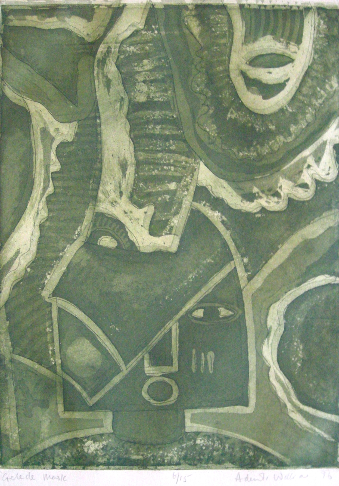

Ademola Williams
B. 1947
Artist Biography
Clement Ademola Williams was born in Oya Via in Oshogbo. He grew up with friends including Rufus Ogundele and Jimoh Buraimoh and in 1968 attended the Ori-Olakun Art workshop in Ife under Soloman Wangjobe. Williams, who was also briefly taught by Akinola Lasekan, initially specialised in prints and in 1969 he, Peter Badejo and two other artists held a show at the United States Information Service (USIS) centre in Ibadan. This was followed by a first solo show of his prints at the British Council in Ibadan in 1971. Williams went on to gain more formal art education at Ahmad Bello University in Zaria in 1976 and gained a diploma in fine art from Bradford College in the UK in 1980. From 1982-2012 he served in various capacities at the University of Benin, eventually specialising in textiles. A Fulbright scholarship took him to the United States in 1996 where he had a solo show in New York, following one earlier that year in Ibadan. In 1998 he put on a display at USIS, Lagos reflecting on his year in the United States. His work was included in a number of group shows including 1995’s ‘Best Art’ exhibition at the National Gallery of Arts in Lagos. University of Albany in the United States holds one of Williams’ works.

Gelede Mask, 1996